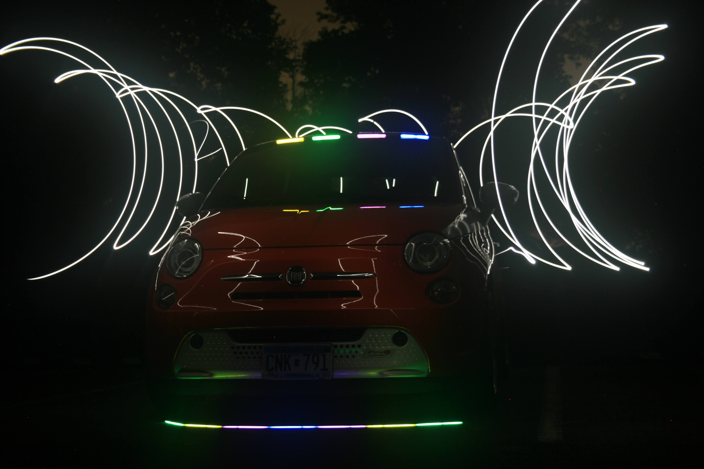

Professional Experience
Barista
June 2025 - PresentStarbucks | Duluth, MN
- Craft beverages and engage with customers
- Take orders and manage payment
- Promote positive customer interactions
- Ensure food safety through cleaning routines and attention to detail
Tech Consultant
September 2022 - January 2025Target | Chaska, MN
- Mitigate security concerns such as product loss by ensuring product security and managing payment.
- Manage inventory counts and backstock surplus inventory.
- Execute visual merchandising according to corporate standards.
Minnesota Platinum Bilingual Seal

In Spring of 2022, I took the Standards-based Measurement of Proficiency (STAMP) test in Spanish, and achieved a score that earned me the highest level of bilingual seal offered by the Minnesota Department of Education. I received the award in June 2024 with my high school diploma. This seal certifies that I am proficient in spoken and written Spanish. In addition to the bilingual seal, I am still taking upper-level college courses in Spanish, and practice my skills very frequently.
My Hobbies

Photography
I love photography of all kinds. Recently, I have explored dark sky photography, including light painting, like the image shown above. I also love nature photography, as seen in the about me page on this site.
Outdoor Exploration
I love being outside and exploring many new places. Whether it be hiking a mountain in the desert, or hiking through forests, or even swimming in a new lake or ocean, I love being outdoors.
Want to Learn More?
Explore my background, skills, and experiences